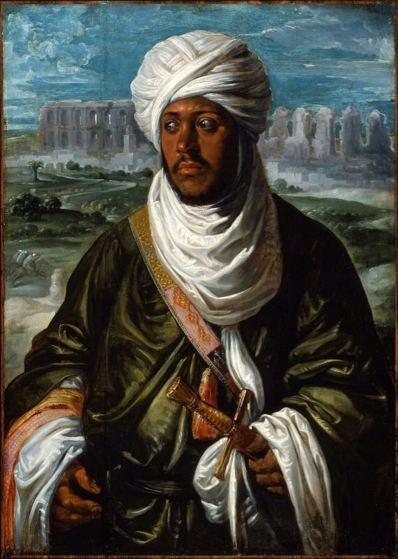
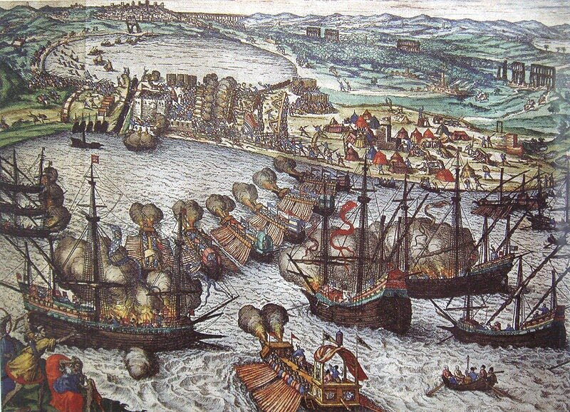
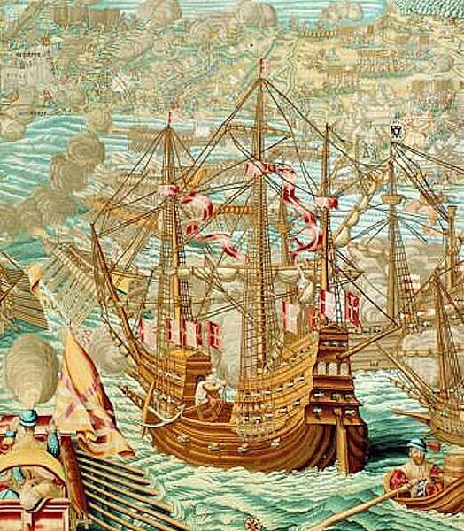
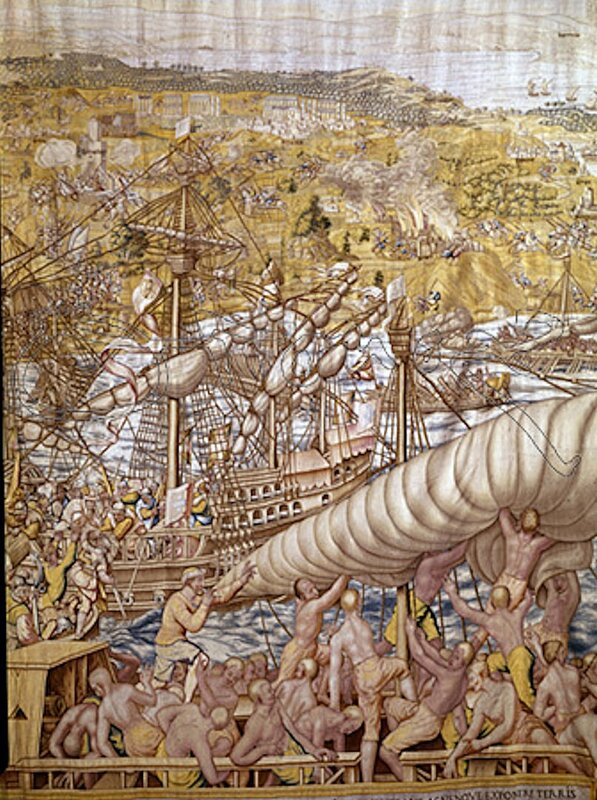

Весной 1535 года Сулейман направился, как и планировал, в Азию, а Барбаросса во главе флота из восьмидесяти четырех кораблей вышел в море. Капудан-паша был слишком опытным, чтобы полагаться на недавно сформированные экипажи турецких судов, поэтому он оставил их в Эгейском море для патрулирования коммуникаций, а сам во главе небольшого отряда из проверенных в боях моряков повел несколько кораблей через Мессинский пролив в Италию. Разорив практически все портовые города, захватив восемнадцать галер и богатую добычу, Барбаросса направил свои корабли к побережью Северной Африки. Там он без особых проблем захватил Тунис, который оборонялся немногочисленным и всеми забытым испанским гарнизоном. Известие об этом всполошило всю Европу. Вновь появившееся на основных торговых путях Средиземного моря гнездо пиратов не сулило ничего хорошего. Император Карл сам возглавил поход в Тунис. Формальным поводом стало обращение правителя Туниса Хасана. История нам донесла портрет сына Хасана – Ахмеда, кисти знаменитого Рубенса, относящийся как раз к 1535 году.

Сам Рубенс не мог в это время писать портрет будущего последнего правителя Туниса, но он воспользовался этюдом Яна Вермеена, голландского живописца (1500-1559), который сопровождал императора Карла V на Тунисской войне 1535 года. Вермеен сделал сотни зарисовок на картонах, но ни один из них не дошел до наших дней. Зато составленная им на основе эскизов общая композиция гобелена сохранилась и поэтому Тунисский поход Карла – один из наиболее освещенных в изобразительном искусстве этапов военной истории XVI века.
Флот в составе шестисот кораблей и судов с 20 000 испанских и немецких солдат, а также португальских добровольцев на борту сопровождала эскадра галер под командованием Андреа Дориа численностью 62 единицы. Мальтийские рыцари, верные своему обещанию поддерживать все морские кампании Карла V, направили в состав соединения Дориа четыре галеры и самый мощный корабль того времени – каракку «Святая Анна».
Противостоять этой армаде в открытом бою Барбаросса не мог. Но и уклониться от боя капудан-паша, получивший от султана приказ отвлечь на себя как можно больше сил императора, был не вправе. Впрочем, когда это пираты надеялись на победу в открытой схватке?! Их оружием всегда были хитрость и внезапность. Главный принцип – ввязываясь в драку, подумай прежде всего, как из нее выходить, был соблюден буквально. Барбаросса отвел полтора десятка быстроходных галер в бухту Бизерты, где снял с них мачты, весла и пушки, которые спрятал на берегу, а корпуса галер затопил на песчаном пляже неподалеку от берега. Когда армада Карла V проходила мимо Бизерты никто и не заподозрил, что в ее водах скрыта галерная эскадра.
В Тунисе Барбаросса провел подготовку к обороне города. Передовой рубеж этой обороны проходил по укреплениям Голетты – крепости, построенной на входе в канал, соединяющий залив Средиземного моря с озером, на котором стоит Тунис. Гарнизон крепости под командованием верного Барбароссе Синана состоял из пяти тысяч хорошо подготовленных воинов, в основном янычар, и такого же количества ополченцев из местных берберских племен. Им удалось продержаться против численно превосходящих сил Карла в течение 24 дней.

И лишь когда мальтийская каракка «Санта Анна» подошла вплотную к стенам крепости и открыла по ним огонь из всех своих пушек, оборонявшие крепость обратились в бегство: берберы в пустыню, турки стали организованно отходить к вырытым заранее траншеям вокруг Туниса.

Европейцы захватили в Голетте 40 турецких пушек, а в канале – почти весь флот османов – более сотни судов. Продвижению войск Карла способствовало восстание в тюрьме Туниса, где содержались пленные христиане-галерные рабы. Восстание организовал рыцарь мальтийского ордена, который помог также захватить арсенал с оружием.

Но войдя в Тунис, европейцы не нашли ни Барбароссы, ни Синана, ни их ближайших товарищей. Они словно бы растворились в пустыне.
Три дня солдаты императора и освобожденные галерные рабы грабили город. Из-за добычи происходили неоднократно стычки между ними. Правитель Туниса Хасан оказался не в силах остановить разбой и мародерство. Карл призвал его к себе и поставил свои условия: передать Голетту для размещения постоянного гарнизона испанцев, а империи выплачивать ежегодную дань. Ясно, что в таком униженном состоянии восточный тиран прожить долго не смог. Его убил собственный сын.
А неуловимый Барбаросса добрался с товарищами до Бизерты, где в срочном порядке стал восстанавливать потайной флот. Дозор флота Андреа Дориа заметил появление в гавани Бизерты османских кораблей, но подойти к ним не смог, так как его туда не подпустили батареи корабельных пушек, заблаговременно размещенные Барбароссой на входе в бухту. Когда же корабли Барбароссы вышли в море, с ними посчитали за лучшее не связываться. Славное морское воинство Дориа ограничилось разграблением Бизерты после ухода оттуда Барбароссы. Близилась зима, море становилось неприветливым и корабли генуэзского адмирала отправились в тихие гавани Сицилии. А Барбаросса направился в Алжир, где сколотил себе боеспособный отряд кораблей, на котором, используя флаги испанского императора и форму испанских матросов, разграбил не ожидавших такой наглости порты острова Менорка, население которого ожидало увидеть корабли победоносного испанского флота но уж никак не разбитых по слухам пиратов. Взяв на борт 5700 пленных, Барбаросса по пути захватил испанские корабли, которые Карл отправил с награбленным добром. Когда раздосадованный Андреа Дориа прибыл к испанскому побережью, пиратов уже и след простыл. Они отправились в Алжир.